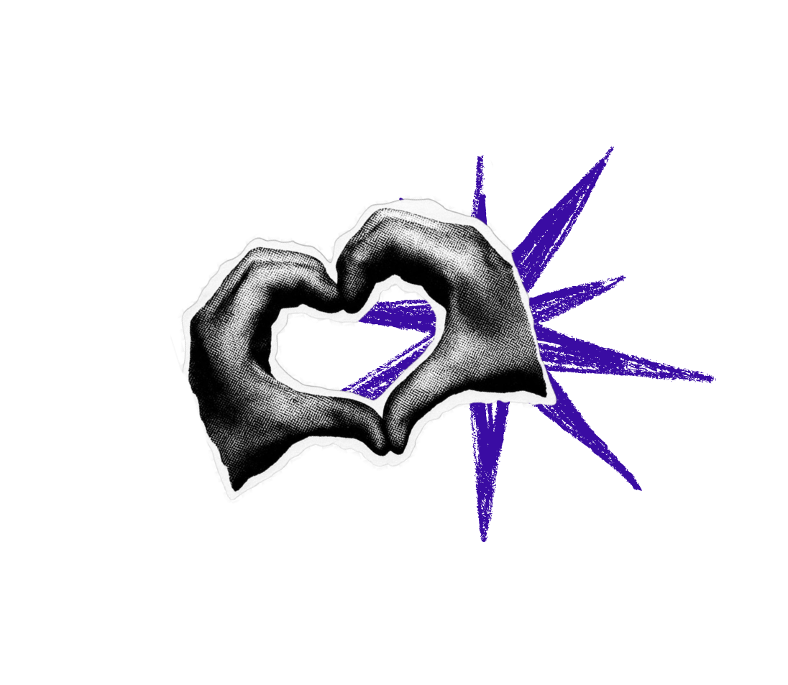
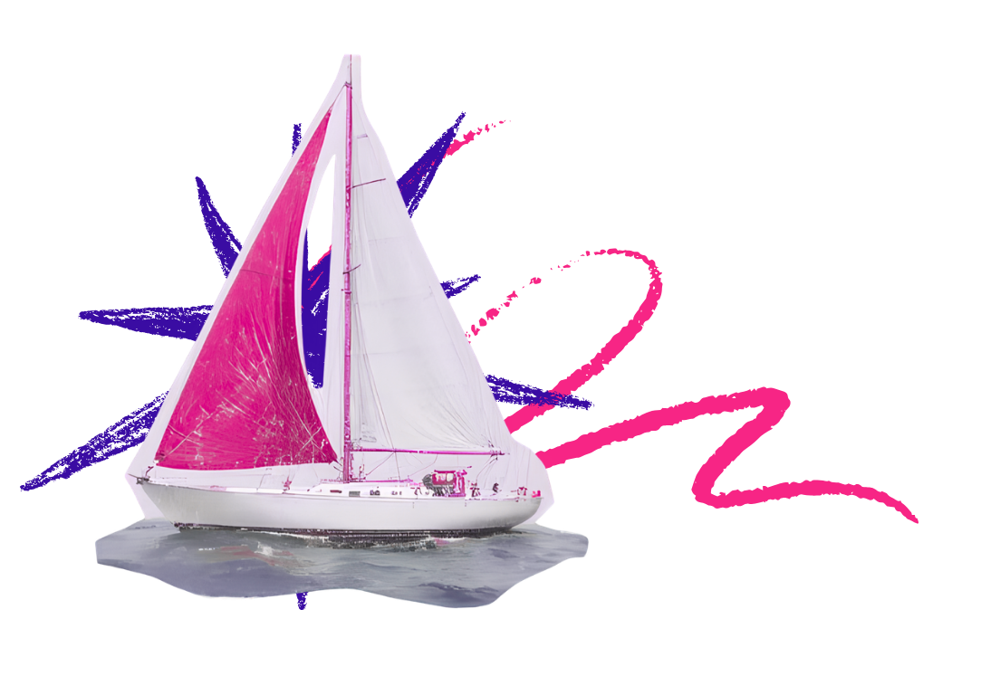

FORMAÇÃO
Capacitações gratuitas, materiais de apoio, oficinas, desenvolvimento de lideranças e certificação.
Uma iniciativa gratuita de mobilização, formação e fortalecimento institucional que conecta pessoas, coletivos e lideranças LGBTQIAPN+ para construir redes de apoio, pertencimento e transformação coletiva.
FAZER INSCRIÇÃO GRATUITA


O Entre Nós é uma iniciativa gratuita realizada pelo Instituto IOES em parceria com a Diretoria de Políticas para a População LGBT+ de Belo Horizonte.
O projeto promove formação, mobilização, fortalecimento institucional e articulação em rede para coletivos, organizações e lideranças LGBTQIAPN+.
Mais do que capacitação, é um espaço de encontro, escuta, troca e construção coletiva.
Mas também representa laços, vínculos, encontros e conexões.
O fortalecimento da comunidade LGBTQIAPN+ acontece quando experiências se encontram e redes de apoio se tornam mais fortes.
É nesse encontro que surgem novas possibilidades de organização, pertencimento e autonomia coletiva.
Capacitações gratuitas, materiais de apoio, oficinas, desenvolvimento de lideranças e certificação.
Consultorias, orientação técnica e acompanhamento especializado para fortalecer coletivos.
Conexões, trocas de experiências, articulação comunitária e fortalecimento coletivo.

O Projeto Entre Nós foi estruturado em três etapas complementares. Cada fase foi pensada para fortalecer a autonomia de pessoas, coletivos e organizações LGBTQIAPN+, criando uma jornada que começa pela mobilização nos territórios, passa pela formação e culmina em consultorias especializadas para apoiar desafios reais enfrentados pelos coletivos.
A primeira etapa acontece nas dez regionais de Belo Horizonte. Serão realizados 10 encontros presenciais gratuitos, com duração de quatro horas cada, aproximando pessoas, lideranças e coletivos LGBTQIAPN+ dos serviços públicos, das políticas existentes e das próximas etapas do projeto.
Além de conhecer melhor a rede de proteção e garantia de direitos, os participantes terão a oportunidade de criar conexões, compartilhar experiências e ingressar na jornada formativa do Projeto Entre Nós.
Na segunda etapa, representantes de coletivos e organizações participam de uma formação composta por 11 temas estratégicos, totalizando 112 horas de conteúdo formativo. Os encontros foram estruturados para fortalecer a gestão, ampliar a sustentabilidade e desenvolver novas oportunidades para coletivos LGBTQIAPN+.
Ao longo da formação, os participantes terão acesso a conteúdos práticos voltados para os principais desafios enfrentados pelas organizações sociais, desde a estruturação institucional até a captação de recursos e o desenvolvimento de lideranças. Os temas foram organizados para que cada módulo complemente o anterior, proporcionando uma formação completa e aplicada à realidade dos coletivos.
Além das formações, os coletivos participantes poderão contar com até 300 horas de consultoria especializada gratuita, distribuídas ao longo de cinco meses. O atendimento será personalizado e construído de acordo com a realidade e as necessidades de cada organização.
O objetivo é apoiar os coletivos na implementação dos conhecimentos adquiridos durante a formação, oferecendo acompanhamento técnico para fortalecer sua atuação, ampliar sua sustentabilidade e desenvolver soluções para desafios concretos.
As datas e horários dos próximos encontros estarão sempre atualizadas nesta página. Os locais de realização, orientações de participação e demais atualizações serão divulgados pelo Instagram oficial do projeto.
@PROJETOENTRENOSBHA primeira etapa do Projeto Entre Nós é aberta a todas as pessoas LGBTQIAPN+ de Belo Horizonte interessadas em fortalecer redes de apoio, conhecer outros participantes e se aproximar das políticas públicas voltadas à população LGBTQIAPN+. As etapas de formação e consultoria são direcionadas a representantes, coordenadores, gestores e outras lideranças de coletivos e organizações LGBTQIAPN+.
Não. Os encontros da primeira fase são abertos ao público LGBTQIAPN+ e representam uma oportunidade para conhecer o projeto, fazer conexões e participar das atividades de mobilização. Já as etapas de formação e consultoria foram desenvolvidas para fortalecer coletivos e suas lideranças.
Não. O Projeto Entre Nós também contempla coletivos informais. Não é necessário possuir CNPJ para participar das formações ou utilizar as consultorias especializadas. O objetivo é fortalecer iniciativas que já atuam em seus territórios, independentemente da formalização jurídica.
Sim. Todas as atividades do Projeto Entre Nós são totalmente gratuitas. Isso inclui os encontros territoriais, os módulos formativos, as consultorias especializadas, o material didático, o certificado de participação e o lanche oferecido durante os encontros presenciais.
O Projeto Entre Nós foi organizado em três etapas complementares. A primeira consiste em encontros presenciais realizados nas regionais de Belo Horizonte, abertos ao público LGBTQIAPN+. A segunda oferece uma formação composta por 11 temas estratégicos, totalizando 112 horas de conteúdo, voltada às lideranças de coletivos. Paralelamente à formação, estarão disponíveis 300 horas de consultoria especializada nas áreas Jurídica, Contábil e Elaboração de Projetos, que poderão ser utilizadas conforme a necessidade de cada coletivo.
Não. Cada tema da formação funciona de forma independente e o participante pode escolher aqueles que mais fazem sentido para sua realidade. Ao concluir cada oficina, será emitido um certificado correspondente à formação realizada.
Sim. O Projeto Entre Nós oferece certificado gratuito para todas as etapas formativas. Os participantes recebem certificado pelos encontros da Fase 1 – Mobilização e Encontros Territoriais, bem como por cada tema concluído na Fase 2. Assim, cada participante constrói sua trajetória de formação ao longo do projeto, de acordo com as atividades em que participou.
Durante a realização da formação, os coletivos poderão solicitar consultorias gratuitas nas áreas Jurídica, Contábil e Elaboração de Projetos. Para utilizar esse benefício, basta preencher um formulário de solicitação e agendar um horário com um dos consultores. Todos os atendimentos serão realizados de forma online e cada coletivo poderá utilizar apenas as consultorias que considerar necessárias.
Os encontros da etapa de mobilização acontecem nas regionais de Belo Horizonte. Sempre que possível, serão realizados nos Centros Culturais das regionais. Quando isso não for viável, acontecerão em espaços parceiros localizados na própria regional ou em locais próximos, garantindo o acesso dos participantes.
As datas dos encontros serão atualizadas periodicamente nesta página. Já os locais, horários e demais orientações de cada atividade serão divulgados pelo Instagram oficial do Projeto Entre Nós. Após realizar sua inscrição, é importante acompanhar nossos canais oficiais para ficar por dentro de todas as atualizações. A equipe também poderá enviar lembretes próximos aos encontros, mas as divulgações oficiais serão sempre realizadas pelos canais do projeto.
O Projeto Entre Nós nasceu para fortalecer coletivos e organizações LGBTQIAPN+ que desenvolvem iniciativas importantes em seus territórios, mas que muitas vezes enfrentam dificuldades para acessar recursos, estruturar sua gestão e garantir a continuidade de suas ações. Por meio de formação, consultoria especializada e construção de redes de apoio, o projeto busca ampliar a autonomia, fortalecer lideranças e contribuir para que essas iniciativas gerem ainda mais impacto em suas comunidades.
Participe gratuitamente do Entre Nós e fortaleça as conexões que transformam comunidades.
INSCREVA-SE GRATUITAMENTE